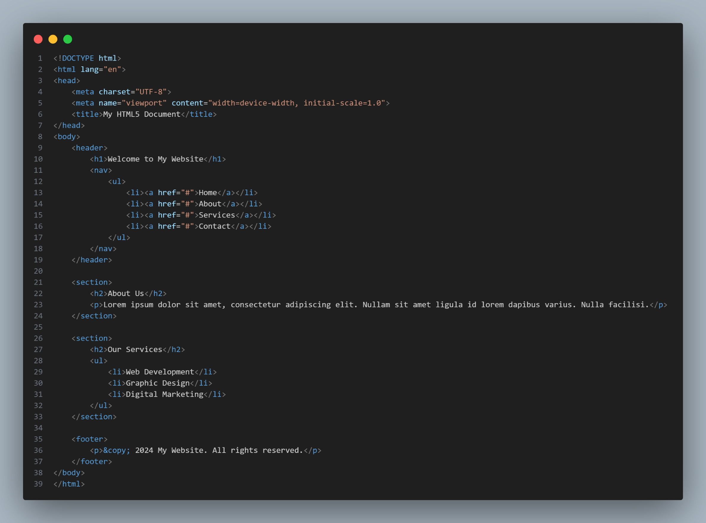

Web Application Development involves structuring the content in a logical and progressive manner, covering key concepts and skills necessary for developing web applications.
It is the process of creating interactive software applications that are accessed through web browsers over a network. It involves a combination of programming, design, and deployment techniques to deliver dynamic and engaging experiences to users.
Key Internet Protocols
These protocols work together to enable seamless browsing, file transfer, email communication, and various other internet-based services, laying the groundwork for the interconnected digital world we rely on today.
HTTP (Hypertext Transfer Protocol) - Serves as the foundation of data communication on the web, defining how messages are formatted and transmitted between web servers and clients.
HTTPS (Hypertext Transfer Protocol Secure) - Enhances the security of HTTP by encrypting data transmission using SSL/TLS protocols, safeguarding sensitive information.
TCP/IP (Transmission Control Protocol/Internet Protocol) - Forms the fundamental suite of protocols facilitating reliable and efficient data transmission across interconnected devices on the internet.
Internet Technologies
These protocols work together to enable seamless browsing, file transfer, email communication, and various other internet-based services, laying the groundwork for the interconnected digital world we rely on today.
HTML (Hypertext Markup Language) - Acts as the standard markup language for creating the structure and content of web pages.
CSS (Cascading Style Sheets) - Complements HTML by providing style rules for enhancing the presentation and layout of web pages/
JavaScript - Serves as a versatile scripting language that enables dynamic content, interactivity, and behavior manipulation on web pages.
Introduction to HTML5 (Hypertext Markup Language)
HTML5, the latest version of the Hypertext Markup Language, revolutionizes web development with its enhanced features and improved semantics. Key points include:
Enhanced Semantic Elements - Introduces semantic elements for clearer document structure, like:
<header>, <nav>, <article>, <section>, and <footer>
Multimedia Integration - Native support for audio, video, and interactive content without third-party plugins like Flash.
Form Enhancements - New input types and validation features for creating user-friendly web forms.
Responsive Design Support - Built-in support for responsive layouts through semantic markup and media queries.
This is an example code of HTML5.

HTML Formatting Elements
Let's explore the fundamental HTML formatting elements that web developers and content creators frequently utilize. Whether you're just starting your journey into web development or looking to brush up on your HTML skills.
Elements
Description
<b>
Renders text in bold.
<strong>
Indicates text of strong importance, typically rendered in bold.
<i>
Renders text in italics.
<em>
Emphasizes text, typically rendered in italics.
<u>
Underlines text.
<s> or <strike>
Renders text with a strikethrough line.
<sup>
Formats text as superscript.
<sub>
Formats text as subscript.
<h1> to <h6>
Underlines text.
<p>
Paragraph.
<a>
Anchor for creating hyperlinks.
<ul>
Unordered list.
<ol>
Ordered list.
<li>
List item.
<img>
Inserts an image.
<video>
Embeds video content.
<section>
Defines a section in a document.
<div>
Division or section in a document.
<nav>
Defines navigation links.
<table>
Defines a table.
<tr>
Defines a row in a table.
<td>
Defines a cell in a table.
<th>
Defines a header cell in a table.
<form>
Defines a form.
<input>
Defines an input control.
<button>
Defines a clickable button.
<!-- Comment -->
Comments in HTML code.
Introduction to CSS
CSS, short for Cascading Style Sheets, is a powerful language used to define the visual presentation and layout of HTML documents. Here are some key points to understand about CSS:
Styling HTML - CSS enables web developers to style HTML elements, controlling aspects such as colors, fonts, spacing, and positioning.
Enhancing User Experience - By applying CSS styles, designers can enhance the user experience by creating visually appealing and user-friendly interfaces.
Three Ways of Implementation:
Internal CSS - Styles are defined within the HTML document itself using the <style> tag in the <head> section. This method is useful for small-scale projects or when styles are specific to a single page.
External CSS - Styles are stored in a separate CSS file and linked to HTML documents using the <link> tag. This approach promotes modularity and reusability, allowing the same styles to be applied across multiple pages.
Inline CSS - Styles are applied directly to HTML elements using the <style> attribute within the element's tag. While this method offers immediate control over individual elements, it can make maintenance and organization more challenging, especially in larger projects.
Overall, CSS plays a crucial role in web development, providing the means to transform plain HTML documents into visually stunning and interactive web experiences. Mastering CSS opens the door to endless possibilities for creative expression and effective communication through web design.
Flexbox
The Flexbox Layout module, a W3C Candidate Recommendation since October 2017, aims to provide a more efficient way of laying out, aligning, and distributing space among items within a container.
It excels at handling unknown or dynamic sizes of items, allowing the container to adjust the width/height and order of items to best utilize available space.
Flex containers expand items to fill free space or shrink them to prevent overflow, enhancing responsiveness across various display devices and screen sizes.
Properties for the Parent (flex conainer)
display - This defines a flex container; inline or block depending on the given value. It enables a flex context for all its direct children.
.container {
display: flex; /* or inline-flex */
}
flex-direction - This establishes the main-axis, thus defining the direction flex items are placed in the flex container.
.container {
flex-direction: row | row-reverse | column | column-reverse;
}
flex-wrap - By default, flex items will all try to fit onto one line. You can change that and allow the items to wrap as needed with this property.
.container {
flex-wrap: nowrap | wrap | wrap-reverse;
}
flex-flow - This is a shorthand for the flex-direction and flex-wrap properties, which together define the flex container’s main and cross axes. The default value is row nowrap.
.container {
flex-flow: column wrap;
}
justify-content - It helps distribute extra free space leftover when either all the flex items on a line are inflexible, or are flexible but have reached their maximum size. It also exerts some control over the alignment of items when they overflow the line.
.container {
justify-content: flex-start | flex-end | center | space-between | space-around | space-evenly | start | end | left | right ... + safe | unsafe;
}
align-items - This defines the default behavior for how flex items are laid out along the cross axis on the current line. Think of it as the justify-content version for the cross-axis (perpendicular to the main-axis).
.container {
align-items: stretch | flex-start | flex-end | center | baseline | first baseline | last baseline | start | end | self-start | self-end + ... safe | unsafe;
}
align-content - This aligns a flex container’s lines within when there is extra space in the cross-axis, similar to how justify-content aligns individual items within the main-axis.
.container {
align-content: flex-start | flex-end | center | space-between | space-around | space-evenly | stretch | start | end | baseline | first baseline | last baseline + ... safe | unsafe;
}
gap, row-gap, column-gap - The gap property explicitly controls the space between flex items. It applies that spacing only between items not on the outer edges.
.container {
display: flex;
...
gap: 10px;
gap: 10px 20px; /* row-gap column gap */
row-gap: 10px;
column-gap: 20px;
}
Properties for the Children (flex items)
order - By default, flex items are laid out in the source order. However, the order property controls the order in which they appear in the flex container.
.item {
order: 5; /* default is 0 */
}
flex-grow - This defines the ability for a flex item to grow if necessary. If all items have flex-grow set to 1, the remaining space in the container will be distributed equally to all children. If one of the children has a value of 2, that child would take up twice as much of the space either one of the others (or it will try, at least).
.item {
flex-grow: 4; /* default 0 */
}
flex-shrink - This defines the ability for a flex item to shrink if necessary. Negative numbers are invalid.
.item {
flex-shrink: 3; /* default 1 */
}
flex-basis - This defines the default size of an element before the remaining space is distributed. It can be a length (e.g. 20%, 5rem, etc.) or a keyword. If set to 0, the extra space around content isn’t factored in. If set to auto, the extra space is distributed based on its flex-grow value.
.item {
flex-basis: | auto; /* default auto */
}
flex - This is the shorthand for flex-grow, flex-shrink and flex-basis combined. The second and third parameters (flex-shrink and flex-basis) are optional. The default is 0 1 auto. But if you set it with a single number value, like flex: 5;, that changes the flex-basis to 0%, so it’s like setting flex-grow: 5; flex-shrink: 1; flex-basis: 0%;. It is recommended that you use this shorthand property rather than set the individual properties. The shorthand sets the other values intelligently.
.item {
flex: none | [ <'flex-grow'> <'flex-shrink'>? || <'flex-basis'> ]
}
align-self - This allows the default alignment (or the one specified by align-items) to be overridden for individual flex items.
.item {
align-self: auto | flex-start | flex-end | center | baseline | stretch;
}